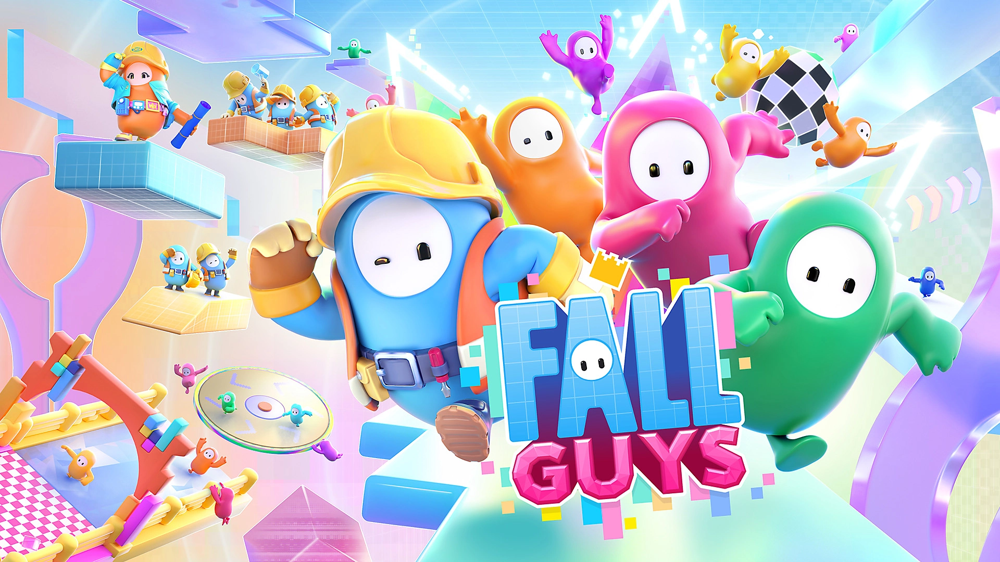
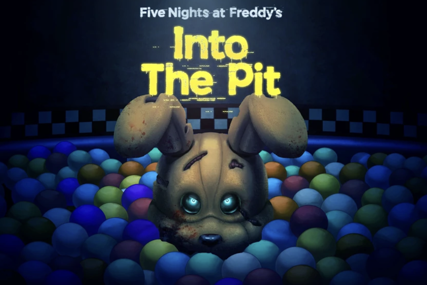
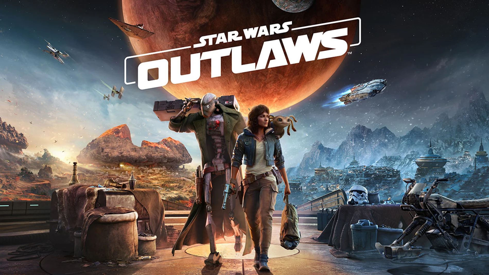

FORNITE

Fortnite es un videojuego del año 2017 desarrollado por la empresa Epic Games lanzado como diferentes paquetes de software que presentan seis diferentes modos de juego, pero que comparten el mismo motor de juego y mecánicas. Fue anunciado en los premios Spike Video Game Awards en 2011.
FALL GUYS
{kind=link}
Fall Guys es un videojuego de plataformas y battle royale gratuito desarrollado por Mediatonic. En el videojuego participan hasta 32 jugadores que controlan criaturas parecidas a gominolas y compiten entre sí en una serie de minijuegos seleccionados al azar, como carreras de obstáculos o fútbol en equipo.
MINECRAFT

Minecraft es un videojuego de construcción de tipo «mundo abierto» o en inglés sandbox creado originalmente por el sueco Markus Persson (conocido comúnmente como «Notch»), que creó posteriormente Mojang Studios (actualmente parte de Microsoft).1920 Está programado en el lenguaje de programación Java21 para la versión Java Edition y posteriormente desarrollado en C++ para la versión de Bedrock Edition.22 Fue lanzado el 17 de mayo de 2009, y después de numerosos cambios, su primera versión estable «1.0» fue publicada el 18 de noviembre de 2011.
five nights at freddy's
{kind=link}
Five Nights at Freddy's es un videojuego de terror y supervivencia independiente del género «point-and-click» desarrollado y publicado por Scott Cawthon. El jugador asume el papel de Mike Schmidt, un guardia de seguridad nocturno en una pizzería familiar.
STAR WARS OUTLAWS
{kind=link}
Star Wars Outlaws es un videojuego de mundo abierto y de acción-aventuras creado por Massive Entertainment1 y lanzado por Ubisoft. Anunciado el 12 de junio de 2023 durante el Ubisoft Forward2, está disponible en PlayStation 5, Windows y Xbox Series X/S y su lanzamiento estuvo estimado para 2024,3 aunque recientes informes financieros de Ubisoft sugerían que podría retrasarse hasta 2025.4
ROBLOX

Roblox es una plataforma de videojuegos en línea y un sistema de creación de videojuegos desarrollado por Roblox Corporation que permite a los usuarios programar y jugar juegos creados por ellos mismos o por otros usuarios. Creada por David Baszucki y Erik Cassel en 2004 y lanzada en 2006, la plataforma alberga juegos creados por usuarios de múltiples géneros codificados en el lenguaje de programación Lua.